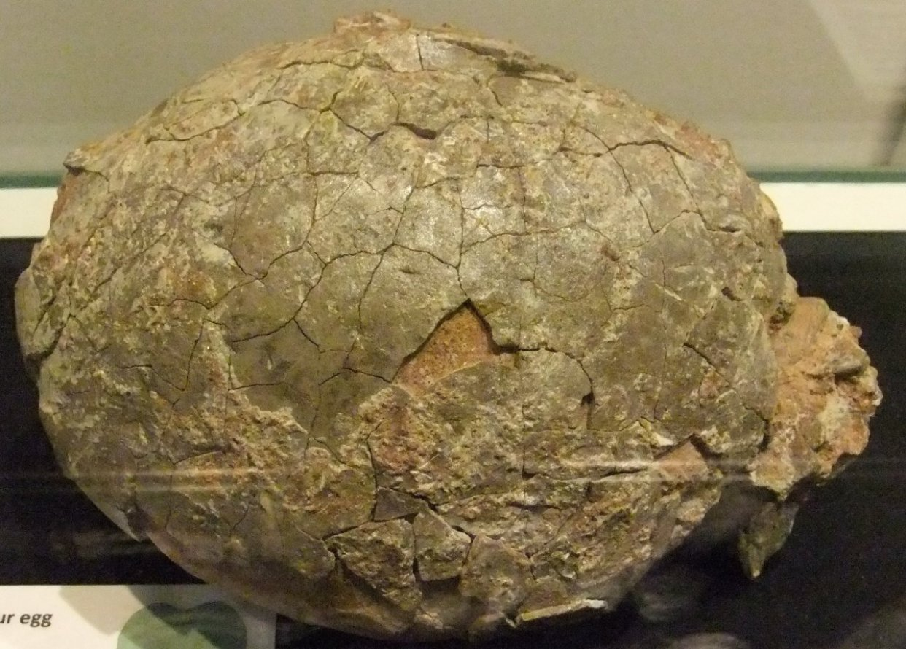

latest news!!
Paleontologists working in India have discovered the first-ever dinosaur 'egg-in-egg.'
Also known as ovum-in-ovo, the egg was found titanosaurid dinosaur nest dating back the Upper Cretaceous Lameta Formation -about 66 million years ago to 100 million years ago.
This type of egg has only been observed in birds and occurs when an egg is pushed back into the mother's reproductive system and becomes embedded with another newly forming egg.
The team, led by the University of Delhi, believe this 'rare and important' discovery shows dinosaurs had a reproductive biology similar to that of birds – it was previously thought dinosaurs were more similar to turtles and other reptiles.
